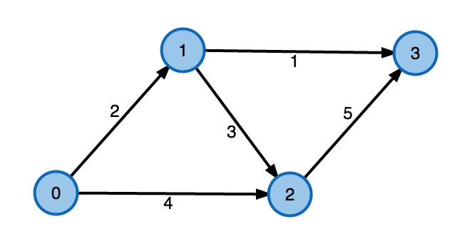
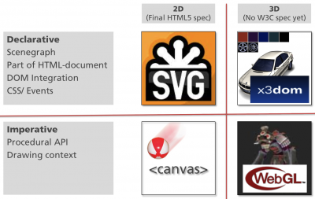

of advanced graph algorithms
IDP of Adrian Haarbach
/**
* @author Mark J. Becker
* Funktionen in dieser Datei werden dazu genutzt,
* Formen auf das Canvas zu zeichnen
*/
/**
* Klasse mit Funktionen, um den Graph auf das Canvas zu zeichnen.
* Die Funktionen in dieser Klasse sind allesamt statisch
* @class
*/
function CanvasDrawMethods() {};
/**
* Zeichne Pfeil an Kante
* @param {Object} ctx 2dContext des Canvas
* @param {Object} layout Layout der Kante
* @param {Object} source Koordinaten des Ausgangspunkts
* @param {Object} target Koordinaten des Zielpunkts
* @param {String} label Text
* @param {String} additionalLabel Zusätzlicher Text
*/
CanvasDrawMethods.drawArrowAtPosition = function(ctx,layout,source,target,label,additionalLabel) {
if(!layout.progressArrow) {
return;
}
var arrowHeadColor = const_Colors.EdgeHighlight2;
// Pfeilkopf zeichnen
ctx.beginPath();
ctx.strokeStyle = arrowHeadColor;
ctx.lineWidth = 4.0;
var position = layout.progressArrowPosition || 0.0;
var center = {x: (source.x + (target.x - source.x) * position), y: (source.y + (target.y - source.y) * position)};
var edgeAngle = Math.atan2(target.y-source.y,target.x-source.x);
var arrowStart = {x:center.x+ Math.cos(edgeAngle)* layout.arrowHeadLength/2,y:center.y+ Math.sin(edgeAngle) * layout.arrowHeadLength/2};
var lineAngle1 = Math.atan2(target.y-source.y,target.x-source.x)
+ layout.arrowAngle + Math.PI; // Winkel des rechten Pfeilkopfs relativ zum Nullpunkt
var lineAngle2 = Math.atan2(target.y-source.y,target.x-source.x)
- layout.arrowAngle + Math.PI; // Winkel des linken Pfeilkopfs relativ zum Nullpunkt
ctx.moveTo(arrowStart.x, arrowStart.y);
ctx.lineTo(arrowStart.x + Math.cos(lineAngle1) * layout.arrowHeadLength, arrowStart.y + Math.sin(lineAngle1) * layout.arrowHeadLength);
ctx.stroke();
ctx.moveTo(arrowStart.x, arrowStart.y);
ctx.lineTo(arrowStart.x + Math.cos(lineAngle2) * layout.arrowHeadLength, arrowStart.y + Math.sin(lineAngle2) * layout.arrowHeadLength);
ctx.stroke();
}
/**
* Zeichnet einen Pfeil, wobei die Pfeilspitze in der Mitte ist.
* Falls der Pfeil als "Highlighted" gekennzeichnet ist wird, so wird ein kleinerer
* Pfeil auf den großen Pfeil in anderer Farbe gezeichnet.
* @param {Object} ctx 2dContext des Canvas
* @param {Object} layout Layout des Pfeils
* @param {Object} source Koordinaten des Ausgangspunkts
* @param {Object} target Koordinaten des Zielpunkts
* @param {String} label Text auf dem Pfeil
* @param {String} additionalLabel Zusatztext zu dem Pfeil
*/
CanvasDrawMethods.drawArrow = function(ctx,layout,source,target,label,additionalLabel) {
// Linie zeichnen
CanvasDrawMethods.drawLine(ctx,layout,source,target);
var arrowHeadColor = layout.lineColor;
if(layout.isHighlighted) {
arrowHeadColor = const_Colors.EdgeHighlight3;
}
// Pfeilkopf zeichnen
ctx.beginPath();
ctx.strokeStyle = arrowHeadColor;
//var position = 0.0;
var center = {x: (target.x+source.x)/2, y:(target.y+source.y)/2};
//var center = {x: (source.x + (target.x - source.x) * position), y: (source.y + (target.y - source.y) * position)};
var edgeAngle = Math.atan2(target.y-source.y,target.x-source.x);
var arrowStart = {x:center.x+ Math.cos(edgeAngle)* layout.arrowHeadLength/2,y:center.y+ Math.sin(edgeAngle)* layout.arrowHeadLength/2};
var lineAngle1 = Math.atan2(target.y-source.y,target.x-source.x)
+ layout.arrowAngle + Math.PI; // Winkel des rechten Pfeilkopfs relativ zum Nullpunkt
var lineAngle2 = Math.atan2(target.y-source.y,target.x-source.x)
- layout.arrowAngle + Math.PI; // Winkel des linken Pfeilkopfs relativ zum Nullpunkt
ctx.moveTo(arrowStart.x, arrowStart.y);
ctx.lineTo(arrowStart.x + Math.cos(lineAngle1) * layout.arrowHeadLength,arrowStart.y + Math.sin(lineAngle1) * layout.arrowHeadLength);
ctx.stroke();
ctx.moveTo(arrowStart.x, arrowStart.y);
ctx.lineTo(arrowStart.x + Math.cos(lineAngle2) * layout.arrowHeadLength,arrowStart.y + Math.sin(lineAngle2) * layout.arrowHeadLength);
ctx.stroke();
if(layout.isHighlighted) {
var thirtyPercent = {x: 0.3*target.x + 0.7*source.x,
y: 0.3*target.y + 0.7*source.y};
CanvasDrawMethods.drawLine(ctx,{lineColor:arrowHeadColor, lineWidth:layout.lineWidth},thirtyPercent,arrowStart);
}
if(label) {
CanvasDrawMethods.drawTextOnLine(ctx,layout,source,target,label);
}
if(additionalLabel) {
CanvasDrawMethods.drawAdditionalTextOnLine(ctx,layout,source,target,additionalLabel);
}
};
/**
* Zeichnet einen Linie in 2D
* @param {Object} ctx 2dContext des Canvas
* @param {Object} layout Layout der Linie
* @param {Object} source Koordinaten des Ausgangspunkts
* @param {Object} target Koordinaten des Zielpunkts
*/
CanvasDrawMethods.drawLine = function(ctx,layout,source,target) {
// Linie zeichnen
ctx.beginPath();
ctx.moveTo(source.x, source.y);
ctx.lineTo(target.x,target.y);
ctx.strokeStyle = layout.lineColor;
ctx.lineWidth = layout.lineWidth;
ctx.stroke();
};
/**
* Zeichnet einen Text auf eine Linie.
* Der Text wird ensprechend gedreht.
* @param {Object} ctx 2dContext des Canvas
* @param {Object} layout Layout des Pfeils
* @param {Object} source Koordinaten des Ausgangspunkts
* @param {Object} target Koordinaten des Zielpunkts
* @param {String} label Text
*/
CanvasDrawMethods.drawTextOnLine = function(ctx,layout,source,target,label) {
ctx.save(); // Aktuellen Zustand speichern (vor den Transformationen)
ctx.font = layout.fontSize.toString() +"px " +layout.font;
var arrowHeight = Math.sin(layout.arrowAngle)*layout.arrowHeadLength;
var arrowWidth = Math.cos(layout.arrowAngle)*layout.arrowHeadLength;
var labelMeasure = ctx.measureText(label);
var alpha = Math.atan2(target.y-source.y,target.x-source.x);
var center = {x: (target.x+source.x)/2, y:(target.y+source.y)/2};
ctx.translate(center.x, center.y);
ctx.rotate(alpha);
if(Math.abs(alpha)>Math.PI/2) { // Verhindere, dass Text auf dem Kopf angezeigt wird.
ctx.translate(0, layout.fontSize/2); // Gehe in die Mitte des Texts
ctx.rotate(Math.PI); // Rotiere um 180 Grad
ctx.fillText(label, -arrowWidth/2, layout.fontSize+3+layout.lineWidth +arrowHeight); // Schreibe Text an Position
}
else {
ctx.fillText(label, -labelMeasure.width/2, -3-arrowHeight); // Verschriebung um 3, um nicht zu nah am Pfeil zu sein.
}
ctx.restore(); // Ursprünglichen Zustand wiederherstellen.
};
/**
* Zeichnet einen Zusatztext auf eine Linie.
* Der Text wird ensprechend gedreht und umkreist.
* @param {Object} ctx 2dContext des Canvas
* @param {Object} layout Layout des Pfeils
* @param {Object} source Koordinaten des Ausgangspunkts
* @param {Object} target Koordinaten des Zielpunkts
* @param {String} label Text
*/
CanvasDrawMethods.drawAdditionalTextOnLine = function(ctx,layout,source,target,label) {
ctx.save(); // Aktuellen Zustand speichern (vor den Transformationen)
ctx.font = layout.fontSize.toString() +"px " +layout.font;
ctx.fillStyle = layout.lineColor;
ctx.strokeStyle = layout.lineColor;
var arrowHeight = Math.sin(layout.arrowAngle)*layout.arrowHeadLength;
var arrowWidth = Math.cos(layout.arrowAngle)*layout.arrowHeadLength;
var labelMeasure = ctx.measureText(label);
var alpha = Math.atan2(target.y-source.y,target.x-source.x);
var viertel = {x: 0.25*target.x+0.75*source.x, y:0.25*target.y+0.75*source.y};
ctx.translate(viertel.x, viertel.y);
ctx.rotate(alpha);
if(Math.abs(alpha)>Math.PI/2) { // Verhindere, dass Text auf dem Kopf angezeigt wird.
ctx.translate(0, layout.fontSize/2); // Gehe in die Mitte des Texts
ctx.rotate(Math.PI); // Rotiere um 180 Grad
ctx.fillText(label, -labelMeasure.width/2, layout.fontSize+3+layout.lineWidth +arrowHeight); // Schreibe Text an Position
ctx.beginPath();
ctx.arc(0,layout.fontSize/2+6+layout.lineWidth +arrowHeight, 0.8*layout.fontSize, 0, Math.PI*2, true);
}
else {
ctx.fillText(label, -labelMeasure.width/2, -layout.fontSize+12-layout.lineWidth -arrowHeight); // Schreibe Text an Position
ctx.beginPath();
ctx.arc(0,-layout.fontSize/2-layout.lineWidth -arrowHeight, 0.8*layout.fontSize, 0, Math.PI*2, true);
}
ctx.lineWidth = 1;
ctx.stroke();
ctx.restore(); // Ursprünglichen Zustand wiederherstellen.
};
/**
* Zeichnet eine gefüllten Kreis an gegebener Position.
* In den Kreis kann ein Text geschrieben werden.
* @param {Object} ctx 2dContext des Canvas.
* @param {Object} position Ort, an dem der Knoten erstellt werden soll.
* @param {Object} layout Aussehen des Knotens.
* @param {String} label Beschriftung des Knotens.
*/
CanvasDrawMethods.drawDisk = function(ctx,position,layout,label) {
ctx.beginPath();
// Zeichne Füllung
ctx.fillStyle = layout.fillStyle;
ctx.arc(position.x, position.y, layout.nodeRadius, 0, Math.PI*2, true);
ctx.fill();
// Zeichne Rand
ctx.lineWidth = layout.borderWidth;
ctx.strokeStyle = layout.borderColor;
ctx.stroke();
// Zeichne NodeID in den Knoten
ctx.fillStyle = layout.fontColor;
ctx.font = layout.font + " " +layout.fontSize.toString() + "px sans-serif";
// Text sollte maximal so breit sein, dass er in den Knoten passt.
var labelMeasure = Math.min(ctx.measureText(label).width,layout.nodeRadius*1.7);
ctx.fillText(label, position.x-labelMeasure/2, position.y+layout.nodeRadius-layout.borderWidth-layout.fontSize/2,layout.nodeRadius*1.7);
};
canvas.on("click", function(e) {
var mx = e.pageX - canvas.offset().left;
var my = e.pageY - canvas.offset().top;
for(var knotenID in graph.nodes) {
if (graph.nodes[knotenID].contains(mx, my)) {
alert("clicked on node " + knotenId);
return;
}
}
for(var kantenID in graph.edges) {
if (graph.edges[kantenID].contains(mx, my, canvas.getContext("2d"))) {
alert("clicked on edge " + kantenID);
return;
}
}
alert("clicked on empty space in canvas");
}
/**
* Zeigt, ob sich die gegebenen Koordinaten auf der Kante befinden.
* @method
* @param {Number} mx x-Koordinate
* @param {Number} my y-Koordinate
* @this {GraphNode}
* @return {Boolean}
*/
GraphNode.prototype.contains = function(mx, my) {
var coord = this.getCoordinates();
var radius = this.getLayout().nodeRadius;
return (mx-coord.x)*(mx-coord.x) + (my-coord.y)*(my-coord.y) < radius*radius;
};
/**
* Zeigt, ob sich die gegebenen Koordinaten auf der Kante befinden.
* Es wird geprüft ob der Mausklick nah genug (innerhalb einer Toleranz) an der Kante war.
* @param {Number} mx x-Koordinate
* @param {Number} my y-Koordinate
* @param {Object} ctx Kontext des aktuellen Canvas
* @this {Edge}
* @returns {Boolean}
* @method
*/
Edge.prototype.contains = function(mx,my,ctx) {
var toleranz = 7; // Wie viele Punkte entfernt von der Kante darf man klicken?
var sourceC = this.getSourceCoordinates();
var targetC = this.getTargetCoordinates();
var alpha = Math.atan2(targetC.y-sourceC.y,targetC.x-sourceC.x);
// Ist der Mauszeiger auf der Kante?
var MouseShift = {x:mx-sourceC.x,y:my-sourceC.y};
var MouseShiftRot = {x: MouseShift.x*Math.cos(-alpha) - MouseShift.y*Math.sin(-alpha),
y: MouseShift.x*Math.sin(-alpha) + MouseShift.y*Math.cos(-alpha)};
var targetShift = {x:targetC.x-sourceC.x,y:targetC.y-sourceC.y};
var targetShiftRot = {x:targetShift.x*Math.cos(-alpha) - targetShift.y*Math.sin(-alpha),
y:targetShift.x*Math.sin(-alpha) + targetShift.y*Math.cos(-alpha)};
if(MouseShiftRot.x>=0 && MouseShiftRot.x<=targetShiftRot.x && Math.abs(MouseShiftRot.y)<=toleranz) {
return true;
}
// Ist der Mauszeiger auf dem Text?
var center = {x: (targetC.x+sourceC.x)/2, y:(targetC.y+sourceC.y)/2};
var labelWidth = ctx.measureText(this.weight.toString()).width;
var arrowHeight = Math.sin(this.getLayout().arrowAngle)*this.getLayout().arrowHeadLength;
var c0 = {x:center.x+Math.cos(alpha)*labelWidth/2,
y:center.y+Math.sin(alpha)*labelWidth/2};
var c1 = {x:center.x-Math.cos(alpha)*labelWidth/2,
y:center.y-Math.sin(alpha)*labelWidth/2};
var c11 = {x:c1.x + Math.cos(alpha + Math.PI/2)*(-3-arrowHeight-this.getLayout().fontSize),
y:c1.y + Math.sin(alpha + Math.PI/2)*(-3-arrowHeight-this.getLayout().fontSize)};
var upperCornerOld = {x:c11.x-c0.x,y:c11.y-c0.y};
var upperCorner = {x:upperCornerOld.x*Math.cos(-alpha) - upperCornerOld.y*Math.sin(-alpha),
y:upperCornerOld.x*Math.sin(-alpha) + upperCornerOld.y*Math.cos(-alpha)};
var rotatedMouseOld = {x:mx-c0.x,y:my-c0.y};
var rotatedMouse = {x: rotatedMouseOld.x*Math.cos(-alpha) - rotatedMouseOld.y*Math.sin(-alpha),
y: rotatedMouseOld.x*Math.sin(-alpha) + rotatedMouseOld.y*Math.cos(-alpha)};
if(rotatedMouse.x <=0 && rotatedMouse.x>= upperCorner.x && rotatedMouse.y<=0 && rotatedMouse.y>= upperCorner.y) {
return true;
}
return false;
};
var svg = d3.select("#mySVG1");
//2 nodes
svg.append("circle").attr({r:15,cx:500,cy:20}).style("fill","blue")
svg.append("circle").attr({r:15,cx:20,cy:20}).style("fill","orange")
//1 edge
var edge = svg.append("g").attr("class","edge")
edge.append("line").attr({x1:35,x2:485,y1:20,y2:20}).style("stroke","black").style("stroke-width","3px")
edge.append("text").attr({x:220,y:20}).text("edge")
var svg = d3.select("#mySVG1");
svg.style("cursor","progress").on("click", function (){alert("clicked on svg");})
svg.selectAll("circle").style("cursor","pointer").on("click", function (){
alert("clicked on node");
d3.event.stopPropagation();
})
svg.selectAll("g.edge").style("cursor","cell").on("click", function (){
alert("clicked on edge")
d3.event.stopPropagation();
})
var sel = d3.selectAll("h3").style("color", "orange");
var sel = d3.selectAll("h3").style("color",function(d,i){
return (i % 2 == 0) ? "magenta" : "blue"
});
d3.select("#svg1").select("circle").remove();
d3.select("#svg1").append("circle")
.attr({"r":15,"cy":20,"cx":Math.random()*800})
var colors = d3.scale.category20();
d3.select("#svg1").selectAll("circle")
.transition().duration(3000)
.style("fill",function(d,i){
return colors(i);
})
.attr("cx",function(d,i){
return i*30+15
})
.attr("r",function(d,i){
return Math.random()*10+5;
})
var sel = d3.select("#myList").selectAll("li")
.data(["red","green","blue"])
.style("color",function(d,i){
return d;
})
function update(data) {
// DATA JOIN
// Join new data with old elements, if any.
var text = svg.selectAll("text")
.data(data, function(d) { return d; });
// UPDATE
// Update old elements as needed.
text.attr("class", "update")
.transition()
.duration(750)
.attr("x", function(d, i) { return i * 32; });
// ENTER
// Create new elements as needed.
text.enter().append("text")
.attr("class", "enter")
.attr("dy", ".35em")
.attr("y", -60)
.attr("x", function(d, i) { return i * 32; })
.style("fill-opacity", 1e-6)
.text(function(d) { return d; })
.transition()
.duration(750)
.attr("y", 0)
.style("fill-opacity", 1);
// EXIT
// Remove old elements as needed.
text.exit()
.attr("class", "exit")
.transition()
.duration(750)
.attr("y", 60)
.style("fill-opacity", 1e-6)
.remove();
}
digraph \(G = (V, E)\)
digraph \(G = (V, E)\)
|  | d3 + x3dom |